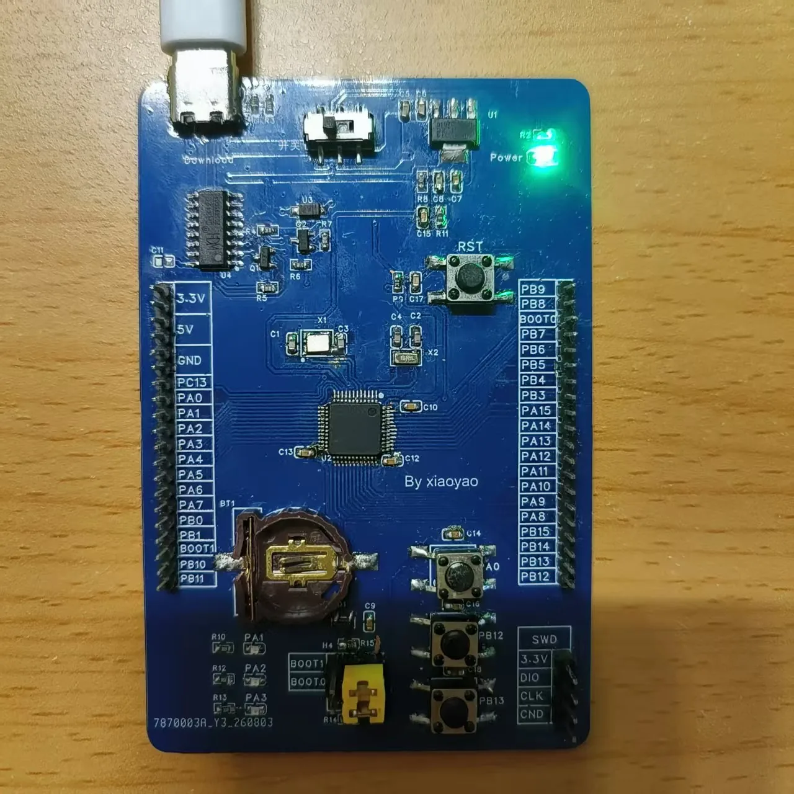
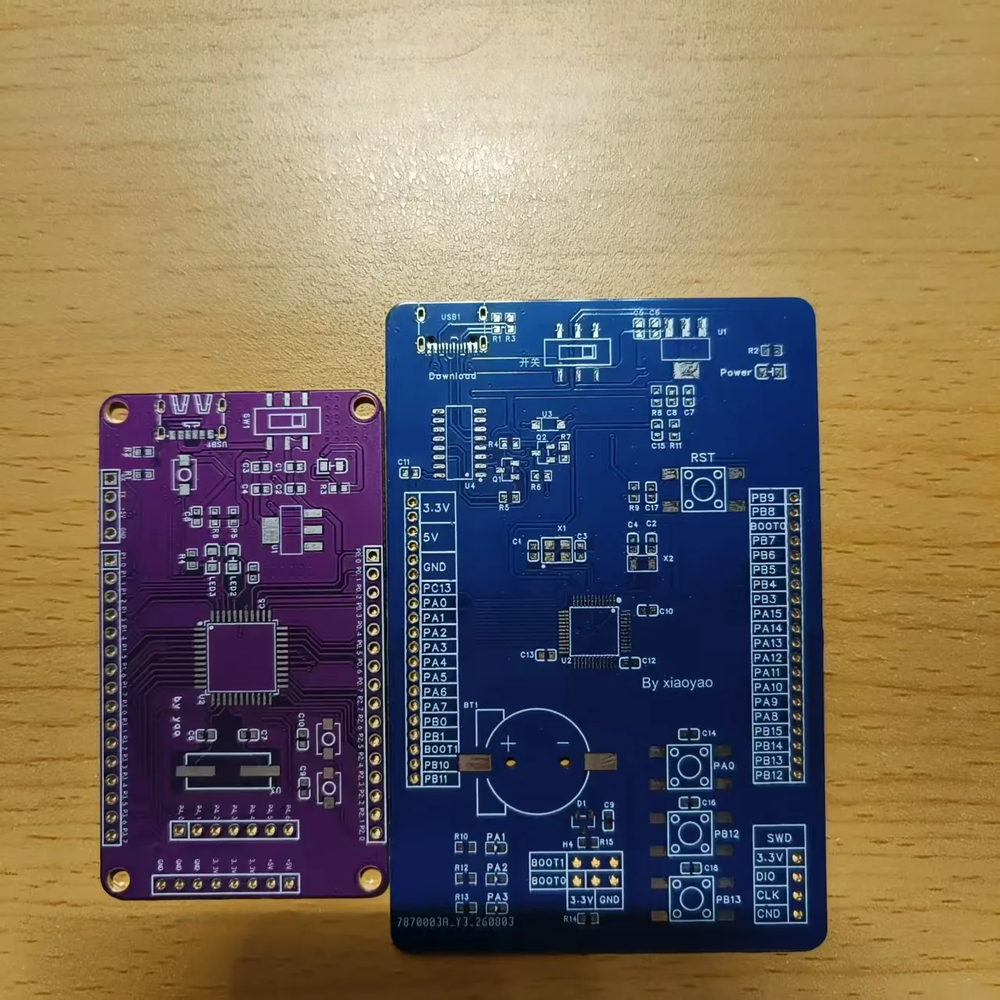
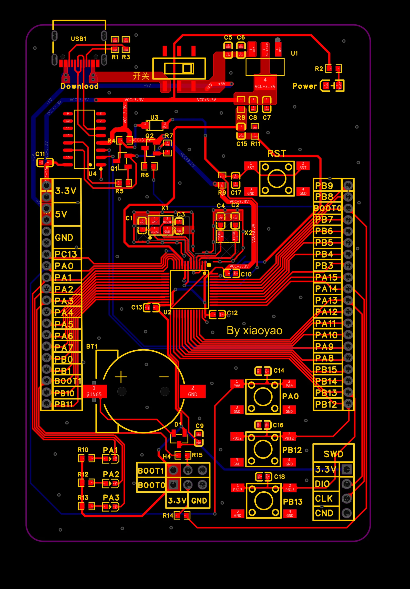
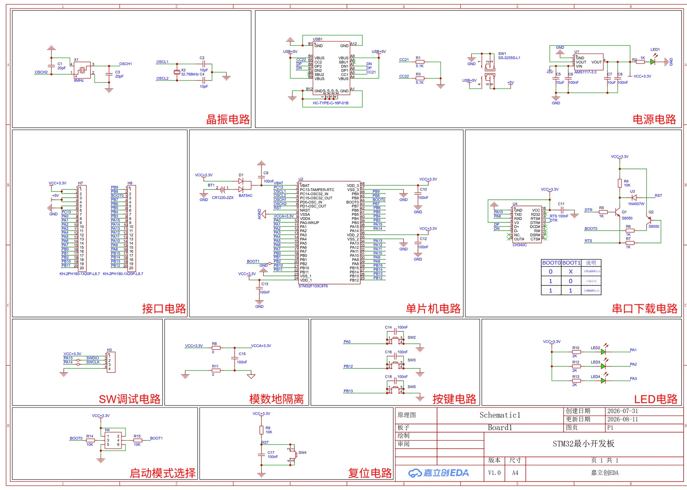
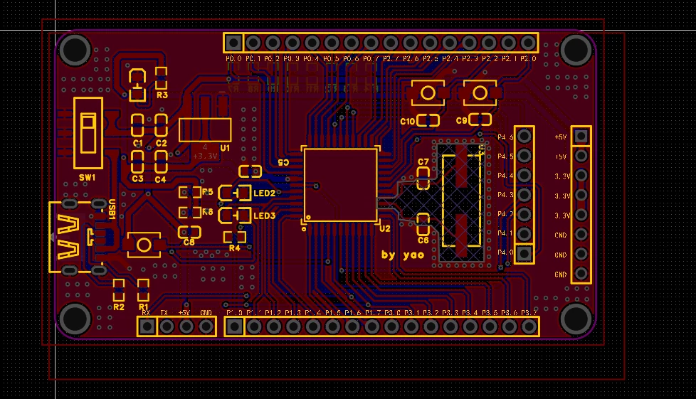
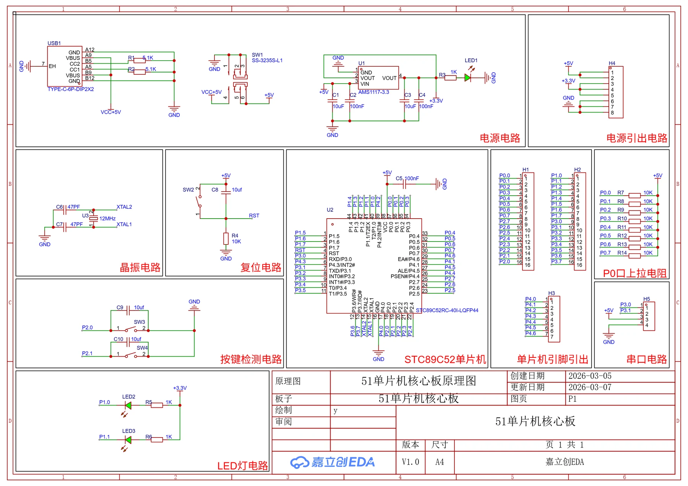

热爱底层技术，具有扎实的编程基础。善于快速学习新技术并应用于实际项目中。
广州软件学院电子与计算机工程专业（2027 届本科），专注嵌入式软件开发。独立完成 STM32F411 + LVGL 桌面智能时钟等完整项目，参与 ESP32-S3 端侧 AI 设备「智龙守望」并负责模型训练与部署，熟悉 C、STM32、FreeRTOS、常见通信协议（I2C/SPI/UART）与硬件调试，具备从驱动到 UI、联网、低功耗的全流程开发能力。
项目背景：桌面场景下，时间、天气、温湿度、计时分散在多个设备，查看不便；用 STM32F411 + 256×64 4bit 灰度屏做一屏整合，并在 128KB RAM 内兼顾联网与续航。
技术栈：C / STM32F411 / LVGL 8.3.11 / SSD1322 / ESP8266 AT / AHT20 / BMP280 / MPU6050 / Keil MDK
大字显示时、分，同屏常驻日期与星期。时间由硬件 RTC 维持，断电后仍继续走时，重新上电直接显示正确时间，不会回到默认值；联网成功后自动同步网络时间，中国时区自动换算，无需手动校准。
每秒采集一次温湿度与气压，经限幅 + 低通滤波后显示，读数稳定不跳动闪烁。独立趋势页以 60 格曲线呈现近 3 小时变化（3 分钟/格），可观察短时走向，例如气压持续下降往往意味着天气转坏。传感器异常时自动丢弃越界值，保留上次有效读数。
联网获取所在城市多日预报（白天/夜间天气、最高最低温、风向风速），天气数据本地缓存，断网期间仍可查看最后一次结果。同时不依赖网络，用自身气压传感器做本地趋势推断（3 小时总变化 + 近 1 小时突变 + 曲线加速/减速形态），输出晴 / 多云 / 阴 / 雨 / 暴雨，可识别「跌幅末端加速」这类暴雨前兆。
倒计时、番茄钟、闹钟三合一。番茄钟工作/休息时长可分别设置（默认 25 / 5 分钟）并自动切换阶段，仅工作阶段自然结束才累加「今日专注次数」；闹钟到点振动提醒、任意键关闭；三者可同时运行、互不干扰。
手表式滚动列表共 8 项：时间校准、番茄钟时长、振动总开关、WiFi 配网、屏幕亮度（低/中/高）、息屏时间（30s / 1min / 5min / 永不）、蜂鸣器、敲击唤醒灵敏度（三档防误触）。改动即时生效，无需重启。
进入配网后屏幕直接提示热点名与访问地址，手机连上设备热点、浏览器打开 192.168.4.1 填写 WiFi 名称、密码与城市即可完成配置，无需 App、无需串口。配置掉电保存、上电自动重连；网络异常每 5 秒重试，连续 6 次失败后暂停联网以省电，稍后自动恢复。
无操作达到设定时长后自动息屏并进入深度休眠。休眠期间每 3 分钟静默采样一次补入趋势曲线，但不会点亮屏幕，用户完全无感；按任意键或轻敲设备即可唤醒，画面立即恢复、无需重新加载。
全部操作由 3 颗按键完成，短按与长按组合出完整控制。设置页分「浏览 → 导航 → 编辑」三态，避免误操作：浏览态翻页不碰设置项、导航态当前行整行反相高亮、编辑态当前字段二次反相高亮，一眼看出正在改哪一项。该交互在时光工坊等页面保持一致。
| 按键操作 | 作用 |
|---|---|
| 左 / 右短按 | 翻页、移动光标、调整数值 |
| 中间短按 | 进入列表 / 进入编辑 / 切换当前编辑字段 |
| 中间长按 | 逐级返回上一级 |
优点
缺点与改进方向
项目背景：桌面学习最大的敌人是注意力：手机一拿起来就收不回来，事后又说不清自己到底专注了多久。智龙守望把摄像头、AI 推理和计时做进一台小设备——它在本地判断你是专注、走神还是离座，用奶龙角色的表情和语音当场提醒，并在结束后给你一份真实的专注统计。
技术栈：ESP32-S3 / TensorFlow Lite Micro / MobileNetV2 迁移学习 / ESP-IDF / LVGL / MQTT / 离线语音模块（SU-03T）/ Python（TensorFlow·OpenCV）
我的职责：负责整条 AI 模型链路——数据采集与清洗、模型训练与验证、TFLite 量化导出，并把模型部署进 ESP32-S3 完成端侧推理。
摄像头持续取帧，在设备本地把当前状态判为 专注 / 走神 / 离座 三类。走神与离座分开建模，是因为两者的应对方式完全不同：走神该被轻轻提醒，离座则应当暂停计时等你回来，混成一类会让统计全部失真。
模型以 TFLite Micro 形式跑在 ESP32-S3 上，张量区放在 PSRAM，画面不出设备、不需要联网。既省掉了上传带宽与云端费用，也避开了摄像头对着书桌办公最敏感的那个问题——隐私。
支持设定学习时长（默认 25 分钟），开始后自动累计有效专注时间。检测到离座即暂停计时，回座后继续；结束后写入当日统计，回答「我今天到底学了多久」这个问题，而不是只看墙上的钟。
外接离线语音模块，唤醒词「你好奶龙」，支持「开始学习」「结束学习」「我回来了」「现在怎么样」「今天表现」等指令。全程离线识别、不依赖网络，说一句话就能操作，不用腾出手去按按钮。
基于 LVGL 自绘的奶龙角色界面：平时呼吸起伏，专注时有对应动画，计时走针另有独立的刀形动画页。用表情代替数字，抬眼一扫就知道自己现在的状态，比盯着冷冰冰的倒计时更有陪伴感。
设备通过 MQTT 把专注记录上报到本地服务端，落库后可在安卓端 App 查看历史与统计；服务端接入大模型，可基于你的学习记录给出阶段性反馈。数据留在自己电脑上，整套系统局域网内即可闭环运行。
import_yolov8.py），补足单一场景下样本多样性不足的问题。AllocateTensors() 会静默失败而不报错——表现为推理永远输出同一个值。后来在初始化阶段显式检查张量类型组合并打印日志，才把这类问题定位出来。优点
缺点与改进方向
项目背景：工业机柜监控长期依赖 if-else 阈值报警，难以覆盖温湿度与电流耦合等复合异常场景，云端推理又面临带宽与时延瓶颈。本项目用 STM32F103 做 Modbus 从站采集传感器数据，ESP32-S3 做 Modbus 主站 + 边缘 AI 推理 + 云端上报，在本地完成「采集 → 推理 → 诊断 → 上云」全链路闭环。
技术栈：STM32F103C8T6 / FreeModbus RTU / RS485 / ESP32-S3 / FreeRTOS / TensorFlow Lite Micro / cJSON / MQTT / OneNET 物联网平台 / Keil MDK / ESP-IDF
基于 FreeModbus 协议栈实现 RTU 从站功能，从站地址 1，UART1 9600 8N1 通信。TIM2 提供 T3.5 帧间超时判断，DWT 计数器实现微秒级延时以保证 DHT11 单总线时序精度。从站独立运行，支持 Modbus Poll 软件直接读取寄存器。
DHT11 数字温湿度传感器接 PB12 开漏输出 + 内部上拉，ADC1 采集 PA0 电位器模拟量模拟电流互感器输入。采集结果写入保持寄存器：温度×10 存 0 号（250→25.0℃），湿度×10 存 1 号，电流×100 存 2 号（250→2.50A），与 ESP32 主站换算公式严格对齐。
ESP32-S3 通过 UART2（GPIO17 TX / GPIO16 RX）作为 Modbus RTU 主站，每 5 秒轮询从站 0 号起的 3 个保持寄存器。ESP-IDF framework 的 esp_modbus_master API 负责底层帧封装与 CRC16 校验，主机只处理业务逻辑。波特率 9600 8N1，与从站完全匹配。
三任务通过 QueueHandle_t 串联：modbus_task（优先级 5）负责轮询从站并将原始数据送入队列；consumer_task（优先级 4）消费数据、换算物理量、运行 AI 推理；upload_task（优先级 3）负责 MQTT 上报。低优先级任务不会阻塞高优先级的 Modbus 轮询，保证 5 秒周期稳定。
TensorFlow Lite Micro 部署量化 MLP 模型，FullyConnected + Softmax 两算子，tensor_arena 仅 4KB，int8 全量化。模型输出 anomaly_prob（异常概率 float）和 is_anomaly（0/1），在本地完成多传感器融合诊断——单次推理平均仅 0.61ms。
采集数据经 cJSON 封装后通过 MQTT 上报至中国移动 OneNET 平台。三元组（产品ID NhX00u3h8p / 设备名 1 / 密钥）固化固件，HMAC-SHA1 签名 token 有效期至 2033 年。物模型定义 5 属性：temperature、humidity、current（float）、anomaly_prob（float）、is_anomaly（int），每 5 秒周期上报。
iRegIndex = usAddress - REG_HOLDING_START；从站数组 usRegHoldingBuf 声明 10 项（仅前 3 项有效）。ESP32 主站发 0 号地址，回调收到 1，索引 0，正好对应数组第一个元素。-DCCACHE_ENABLE=0 禁用 ccache。Windows PowerShell 7 下不能用 IDF 的 export.ps1（StandardOutputEncoding bug），必须手动设环境变量。优点
缺点与改进方向
独立完成 STM32 及 51 单片机双层 PCB 的原理图设计、布局布线，并完成打样后的元器件手工焊接与测试。具备扎实的硬件电路基础和动手能力。（点击图片可放大查看细节）

📸 STM32 核心板打板后焊接完成实物图
📸 STM32 与 51 打板裸板 (未焊接)
💻 STM32 PCB Layout 图
📐 STM32 原理图
💻 51 单片机 PCB Layout 图
📐 51 单片机原理图